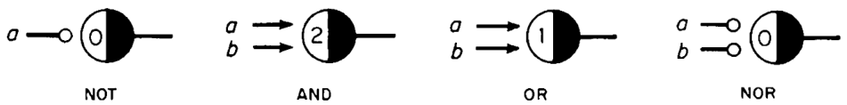
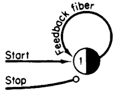
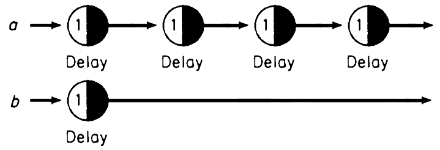
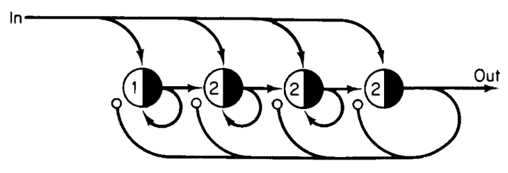
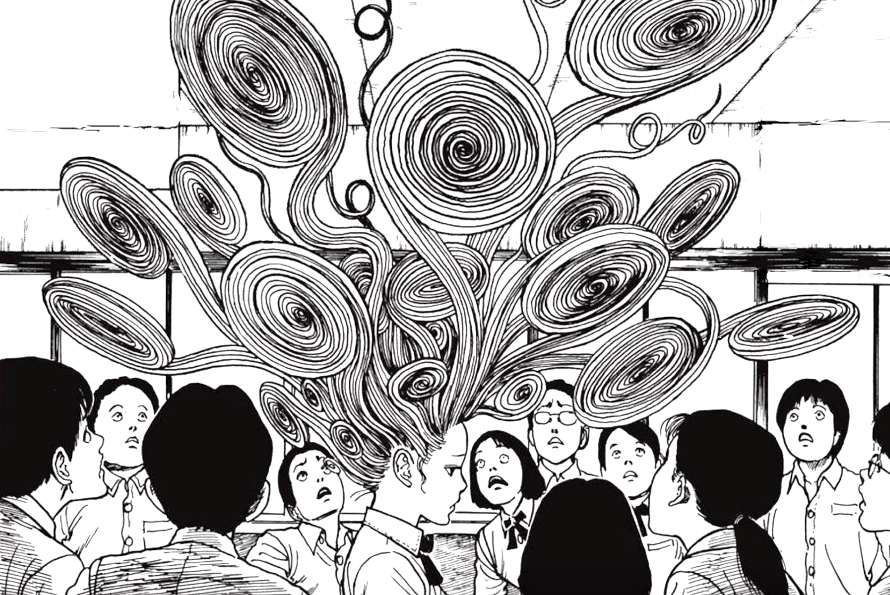

Neur is a programming language based on McCulloch-Pitts neurons.
A neuron has incoming and outgoing connections to other neurons, it fires an output that stimulates or inhibits other neurons when it is not inhibited and the sum of its excitatory inputs is equal or higher than its threshold. A neuron with a threshold of zero will always fire.
 A neuron connected by two excitatory fibers, one
inhibitory fiber, with a threshold of two.
A neuron connected by two excitatory fibers, one
inhibitory fiber, with a threshold of two.
A Notation
Neural networks are typically programmed with flow diagrams, I found those to be prone to clutter. Instead, this documentation will use a textual representation, which allows networks to be created more rapidly and precisely.
A neuron*. neuron/1
In a rule, a neuron is specified with a star suffix, an excitatory connection is separated by a colon, an inhibitory connection is separated by a semi-colon. A rule with no right-hand side will create live neurons with a threshold of one. A rule is terminated by a period, rules can be chained, everything else is ignored.
If I have matches*, and some kindling*: I can make a fire*: fire/2 and have some light*. light/1 But if it's raining*; I cannot make a fire*. I have matches* and kindling*. matches/1 kindling/1
Playground
Neural nets have an inclination for recipe crafting that resembles rewriting languages, but do not incur the cost of searching and matching facts against a database, reagents in rules are wired directly between each other like state-machines.
A program will most likely involve an initial pulse. Let's say we want a
program/1 to wake up two other neurons via excitatory fibers:
The program* will wake up: both hello* and world*. hello/1 world/1 Let's start our program*. program/1
Logic in neural nets is implemented by combining thresholds, inhibitory and excitatory fibers. Arity can be hardcoded by specifying it in the symbol name. Here are the implementation of a few logic gates:
a* b*: AND*. AND/2 a* b*: OR/1*. OR/1 Activate both a* & b*. a/1 b/1
Loops
Loops can be implemented by connecting neurons in a circle. In the following program, two such circles are created, notice how this makes use of anonymous neurons:
fizz*: *: *: fizz*. buzz*: *: *: *: *: buzz*. Initialize both fizz* & buzz*.
.. 10 */1 buzz/1 11 */1 */1 12 fizz/1 */1 13 */1 */1 14 */1 */1 15 fizz/1 buzz/1 16 */1 */1 ..
Memory Neurons
Delaying a pulse is the same as remembering it for a length of time, and so
we'll call a memory neuron a Neuron/1 that store a single
bit of information by using an excitatory feedback fiber connected onto
itself. To set the value of that neuron, use an a excitatory start fiber
and inhibitory stop fiber.
Bit*: Bit*. controls: - start*: Bit*. - stop*; Bit*.
Synchronization
Each neuron delays a pulse by one moment, pulses may go out of sync if parts of a program require two pulses to converge, but memory neurons can synchronize pulses by holding it until another part of the network is ready to use it.
In the program below, the a network is 4 times slower than the
b network, to insure that both pulses can be used together, the
Fast/1 and Slow/1 neurons will synchronize the
delayed pulse and only fire the gate neuron once both are active.
Two pulses coming in at different speeds. a*:*:*:*: Slow*: Slow*. b*: Fast*: Fast*. The pulses from Fast* and Slow* converge into: the gate* which waits for both: and then lights up the output*. The gate* will then turn off; the Fast* and Slow* neurons. Fire the a* and b* signals.
00 a/1 b/1 01 */1 Fast/1 02 */1 Fast/1 03 */1 Fast/1 04 Slow/1 Fast/1 05 Slow/1 Fast/1 gate/2 06 gate/2 output/1 07 output/1
Capacitors
Alternatively, connecting memory neurons in a sequence can build up to a capacitor that will accumulate pulses until it reaches its storage limit, output a pulse, and start over. Here is a binary scaler that, for every two incoming pulses, will output one pulse.
Let's delay* the second pulse: and connect it to split*. The split* will share the signal: with our two memory neurons A/2* B/1*. B*: B*: A*. A*; A*; B*. For every two pulses entering A* and B: it will fire once to output*. delay* split*.
00 Init/1 01 delay/1 split/1 02 split/1 B/1 03 B/1 A/2 04 output/1
This technique can be adapted to collect more pulses at once. Gathering pulses can lead to signal synchronization, as well as building blocks for arithmetic systems.
Here is a capacitor with four memory neurons, when all four at holding a pulse, a single signal is sent through out/1:
Connect 5 delay nodes. d0*: d1*: d2*: d3*: d4*: in*. Connect in*: to m0/1* m1/2* m2/2* m3/2*. Connect each to themselves and neighbor. m0*: m0* m1*. m1*: m1* m2*. m2*: m2* m3*. m3*: out*. Turn off all memories from m3*; m0* m1* m2* m3*. Create 5 pulses d0*, d1*, d2*, d3*, d4*.
00 d0/1 d1/1 d2/1 d3/1 d4/1 01 d1/1 d2/1 d3/1 d4/1 in/1 02 d2/1 d3/1 d4/1 in/1 m0/1 03 d3/1 d4/1 in/1 m0/1 m1/2 04 d4/1 in/1 m0/1 m1/2 m2/2 05 in/1 m0/1 m1/2 m2/2 m3/2 06 out/1
Example: Rock Paper Scissors
Let's have a look at an declarative example in which we define winning moves and gradually fire the neuron corresponding to player moves:
Winning moves. rock* scissors*: *: rock-wins*. scissors* paper*: *: scissors-wins*. paper* rock*: *: paper-wins*. Handle ties. rock* paper* scissors*: no-tie/2*; tie*. game*: *: tie*. Start game*.
One plays rock*. Two plays paper*. 00 rock/1 paper/1 game/1 01 */2 no-tie/2 */1 02 paper-wins/1 -- One plays scissors*. Two plays scissors*. 00 scissors/1 game/1 01 */1 02 tie/1
Example: Tic-Tac-Toe
Let's have a look at an other example of declarative programming in the same style:
Winning states for X player. xa* xb* xc*: *: win-x*. xd* xe* xf*: *: win-x*. xg* xh* xi*: *: win-x*. xa* xe* xi*: *: win-x*. xg* xe* xc*: *: win-x*. xa* xd* xg*: *: win-x*. xb* xe* xh*: *: win-x*. xc* xf* xi*: *: win-x*. Winning states for O player. oa* ob* oc*: *: win-o*. od* oe* of*: *: win-o*. og* oh* oi*: *: win-o*. oa* oe* oi*: *: win-o*. og* oe* oc*: *: win-o*. oa* od* og*: *: win-o*. ob* oe* oh*: *: win-o*. oc* of* oi*: *: win-o*.
Set move in the format xa, ob, xc, etc a | b | c --+---+-- d | e | f --+---+-- g | h | i . Play oc*. Play xb*. Play oe*. Play xh*. Play og*. -- 00 oc/1 xb/1 oe/1 xh/1 og/1 01 */3 02 win-o/1
- The McCulloch-Pitts Neuron
- Runtime Implementation, C89.
- Runtime Implementation, uxn.
- Runtime Implementation, lua.
- Graphical Simulator
- Illustrations from Marvin Minsky's Finite & Infinite Machines.